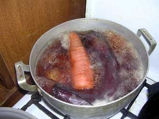
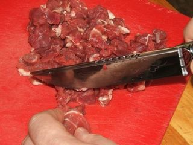
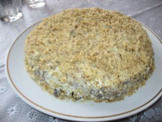

Шаг 1: готовим овощи и заправку.

Хорошенько промываем овощи и яйца, складываем в кастрюлю и ставим вариться. Добавляем, конечно же, соль. Лучше овощи не чистить. Когда овощи сварятся, им надо остыть. Шляпка будет делаться слоями.
В глубокой миске смешиваем сметану и майонез, выдавливаем в смесь чеснок и добавляем немного соли. Тщательно перемешиваем и ставим в холодильник на 15 минут.
Шаг 2: подготавливаем мясную прослойку.

Пока овощи варятся, займемся мясной составляющей салата. Для этого мясо промываем и нарезаем тонкими ломтиками. Ставим на огонь сковородку и посоленное и поперченное мясо обжариваем до готовности. Отставляем в сковородке остывать.
Шаг 3: делаем «Шляпку».
Когда овощи сварились и остыли, аккуратно чистим и ставим перед собой блюдо, в котором будет делаться «Шляпка».
Наша задача натереть на крупной терке овощи слоями, чередуя их с мясом и заправкой. Итак, слоя: картофельный-заправка-свекла-заправка-морковь-заправка-яйца-заправка-сыр. Затем выкладываем кусочки мяса и смазываем заправкой. Последний слой должен быть намазан по всему периметру. Часть орехов измельчаем в блендере и посыпаем поверх последнего слоя.

Теперь нам нужно выделить поля шляпы, для этого мы уменьшаем следующие слои в диаметре. И опять – картошка, свекла, морковь ,яйца, сыр и мясо: между слоями прокладываем заправку. Последняя, как и в прошлый раз, по всей «поднявшейся» части салата. Теперь весь салат засыпаем оставшейся частью орехов.